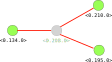

Enlaces vitales
Señales
Monitores
En Elixir es posible establecer un enlace vital (link) entre dos procesos, de modo que cada uno de ellos puede detectar si el otro ha muerto.
Los enlaces vitales son bidireccionales.
spawn_link/3 funciona igual que
spawn/3 pero además crea un enlace vital entre el proceso
que hace la llamada a spawn_link y el proceso recién
creado.> self()
#PID<0.155.0>
> spawn_link(EnlacesVitales,
:saludar, [])
Hola, mundo
#PID<0.156.0><0.155.0> y <0.156.0>.
Un proceso puede enviar señales a otro.
Las señales no se comportan como los mensajes vistos anteriormente.
receive.La «causa» es un término de Elixir que indica la razón por la que un proceso finaliza.
Si un proceso termina debido a que la función que estaba ejecutando ha finalizado, decimos que el proceso ha terminado de manera normal.
:normal.…pero un proceso puede terminar de manera anormal.
Process.exit(pid, :kill).
:normal, siguen ejecutándose sin realizar ninguna acción
especial.
Sin embargo, si un proceso recibe una señal con una causa
distinta de :normal, el proceso también muere.
…y también propagará la señal de salida a todos los procesos con los que estuviera enlazados.
Supongamos que tenemos la siguiente función que terminará por causas anormales:
fallar.Interactive Elixir (1.17.1) - press Ctrl+C to exit (...)
> self()
#PID<0.160.0>
> spawn_link(EnlacesVitales, :fallar, [])
12:00:23.821 [error] Process #PID<0.176.0> raised an exception
** (ArithmeticError) bad argument in arithmetic expression
Interactive Elixir (1.17.1) - press Ctrl+C to exit (...)
> self()
#PID<0.162.0> El proceso de la shell ha muerto ¡y se ha reiniciado! Como esperábamos, el proceso que ejecutaba la shell ha
muerto, al tener un enlace vital con el proceso creado mediante
spawn_link.
Pero, ¿por qué se ha reiniciado?
El proceso de la shell, a su vez, está siendo monitorizado por otro proceso supervisor que se encarga de reiniciar la shell cada vez que su proceso correspondiente muere.
Como hemos visto, por defecto, cuando un proceso
X recibe una señal de terminación de otro proceso
Y enlazado, y la causa de la finalización de Y
es anormal, el proceso X también muere.
Es posible evitar este comportamiento por
defecto, de modo que X pueda capturar la
señal de terminación.
Cuando un proceso hace la siguiente llamada:
está indicando que quiere capturar las señales de terminación de otreos procesos.
De este modo, cuando el proceso reciba una señal
de terminación de otro, esta señal se transformará en un
mensaje que se guardará en su cola de mensajes, y que
podrá obtener mediante receive.
> self()
#PID<0.179.0>
> Process.flag(:trap_exit, true)
> spawn_link(EnlacesVitales, :fallar, [])
#PID<0.180.0>
12:22:16.770 [error] Process #PID<0.180.0> raised an exception
** (ArithmeticError) bad argument in arithmetic expression
> self()
#PID<0.179.0> La shell sigue viva
> receive do: (x -> x)
{:EXIT, #PID<0.180.0>, ...} La shell ha recibido la señal como mensaje El mensaje recibido tiene la siguiente forma:
pid: es el PID del proceso muerto que ha enviado la
señal.
reason: causa de la finalización del
proceso.
Cuando un proceso captura las señales de salida recibidas, también captura aquellas asociadas a terminación normal:
> Process.flag(:trap_exit, true)
> spawn_link(EnlacesVitales, :saludar, [])
Hola, mundo
#PID<0.181.0>
> flush
{:EXIT, #PID<0.181.0>, :normal}Los monitores son una alternativa a los enlaces vitales.
Mientras que los enlaces vitales son bidireccionales, los monitores son unidireccionales:
Si X monitoriza un proceso Y:
Cuando Y finalice, enviará una señal a
X.
pero X, cuando finalice, no enviará una señal a
Y.
Mediante la función spawn_monitor/3, que funciona
igual que spawn, pero el proceso que hace la llamada a
spawn_monitor monitorizará el proceso recien
creado.
También se puede utilizar la función
Process.monitor/1 que monitoriza un proceso ya
existente.
Cuando un proceso muere, todos aquellos que le monitorizan reciben un mensaje de la siguiente forma:
pid es el proceso que ha finalizado.reason es la causa de la finalización (puede ser
:normal).ref es la referencia del monitor (devuelta por
spawn_monitor).> spawn_monitor(EnlacesVitales, :saludar, [])
{#PID<0.182.0>, #Reference<...>}
> receive do: (x -> x)
{:DOWN, #Reference<...>, :process, #PID<0.182.0>, :normal}